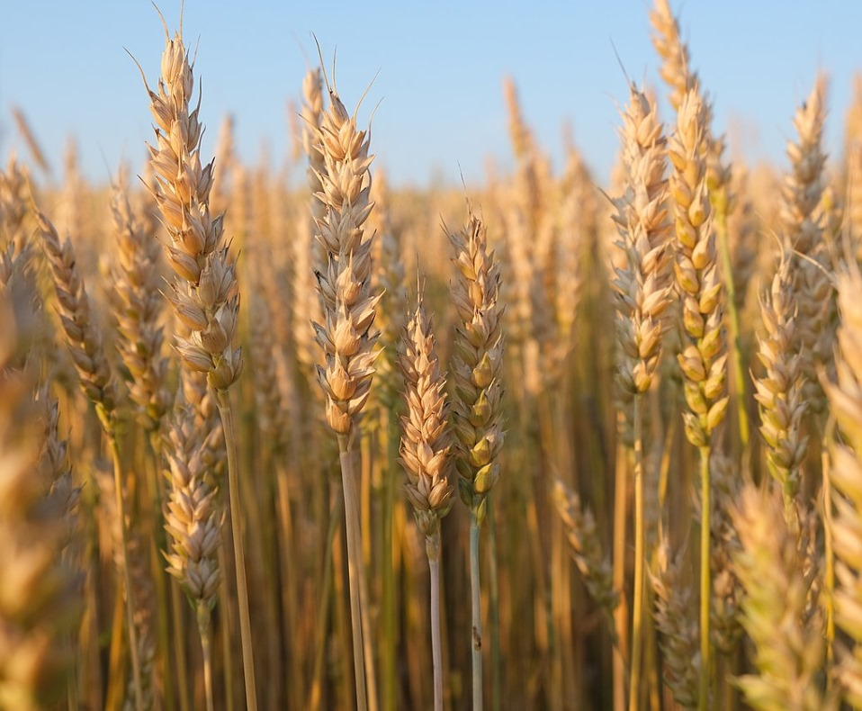
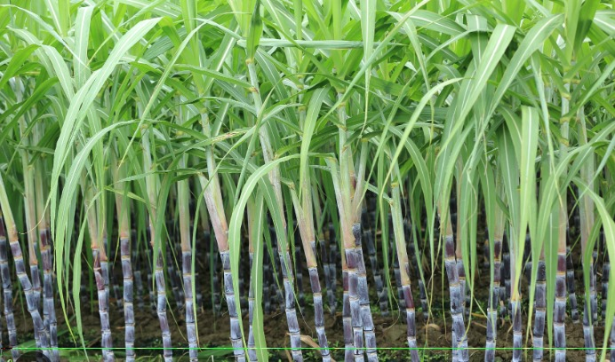

Crop Plants
-

Wheat plant
Description:Wheat is a grass widely cultivated for its seed, a cereal grain that is a worldwide staple food. The many species of wheat together make up the genus Triticum (/ˈtrɪtɪkəm/);[3] the most widely grown is common wheat (T. aestivum). The archaeological record suggests that wheat was first cultivated in the regions of the Fertile Crescent around 9600 BC. Botanically, the wheat kernel is a caryopsis, a type of fruit. Wheat is grown on more land area than any other food crop (220.7 million hectares or 545 million acres in 2021). World trade in wheat is greater than for all other crops combined. In 2021, world wheat production was 771 million tonnes (850 million short tons), making it the second most-produced cereal after maize (known as corn in the US and Australia; wheat is often called corn in other countries). Since 1960, world production of wheat and other grain crops has tripled and is expected to grow further through the middle of the 21st century. Global demand for wheat is increasing because of the usefulness of gluten to the food industry.
-

Sugarcane Plant
Description:Sugarcane, (Saccharum officinarum), perennial grass of the family Poaceae, primarily cultivated for its juice from which sugar is processed. Most of the world’s sugarcane is grown in subtropical and tropical areas. The plant is also grown for biofuel production, especially in Brazil, as the canes can be used directly to produce ethyl alcohol (ethanol). The by-products from cane sugar processing, namely the straw and bagasse (cane fibres), can be used to produce cellulosic ethanol, a second-generation biofuel. Other sugarcane products include molasses, rum, and cachaça (a Brazilian alcohol), and the plant itself can be used as thatch and as livestock fodder.